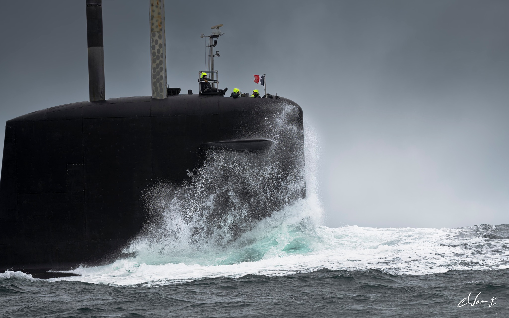
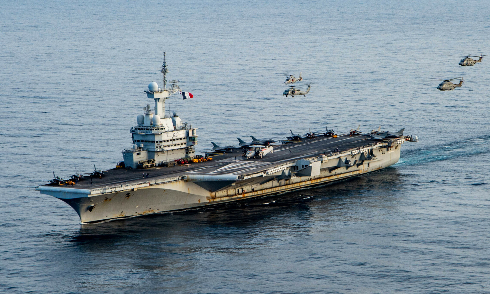
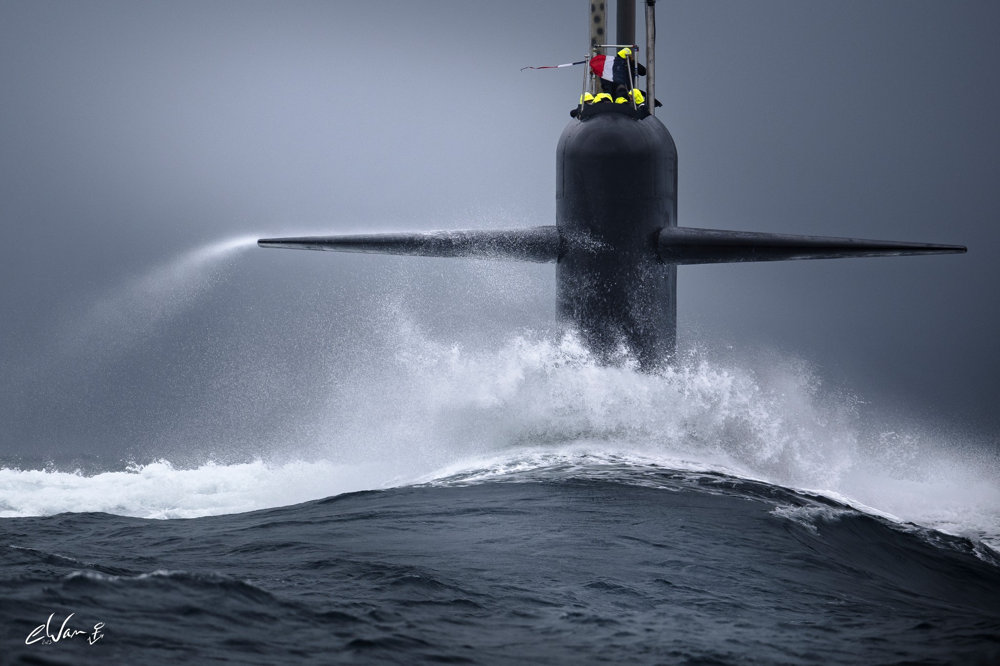
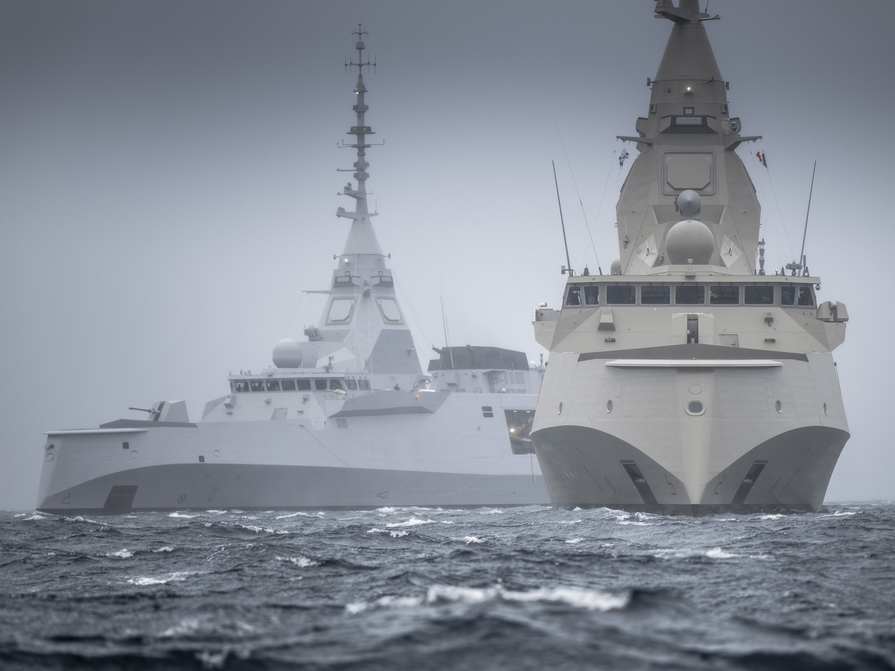
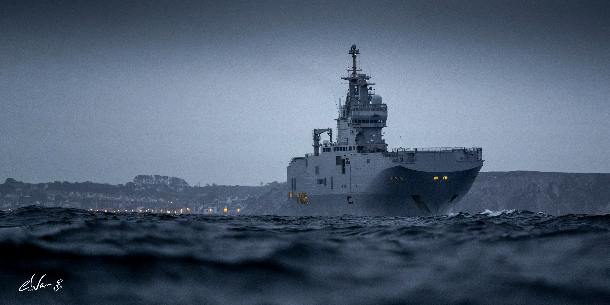
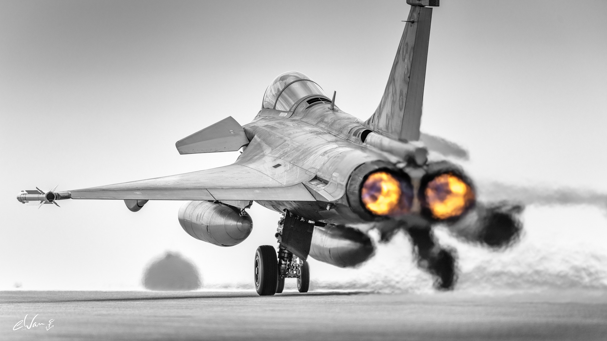

Maîtrise des mers, protection des intérêts maritimes

Le porte-avions Charles de Gaulle est le navire amiral de la Marine. Seul porte-avions à propulsion nucléaire hors États-Unis, il projette la puissance aérienne partout dans le monde.

Les sous-marins nucléaires lanceurs d'engins assurent la composante océanique de la dissuasion nucléaire. Les sous-marins d'attaque protègent nos approches.

Les frégates FREMM sont des bâtiments polyvalents assurant la protection aérienne, la lutte anti-sous-marine et les frappes vers la terre.

Les BPC Mistral permettent la projection de forces terrestres depuis la mer. Transport de troupes, hélicoptères et véhicules blindés.

Rafale Marine, hélicoptères Caïman et Panther, avions de patrouille maritime Atlantique 2 constituent notre aviation embarquée et côtière.
Forces spéciales d'élite de la Marine, les commandos marine interviennent sur tous les théâtres d'opérations, terrestres comme maritimes.
Protection des zones économiques exclusives et des voies maritimes